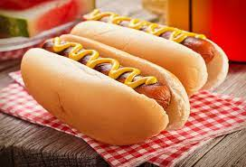

Hot Dog

Description
Hot Dog consists of a cooked sausage place inside bread with condiments.
Ingredients
- 8 hot dogs, chopped
- ⅔ cup shredded Cheddar cheese
- 3 tablespoons pickle relish
- 3 tablespoons ketchup
- 2 teaspoons prepared mustard
- 3 tablespoons chopped onion
- 8 hot dog buns
Steps
- Preheat the oven to 325 degrees F (165 degrees C).
- Stir hot dogs, Cheddar cheese, relish, ketchup, mustard, and onion together in a bowl; spoon into hot dog
buns. Wrap each sandwich in aluminum foil.
- Bake in the preheated oven until hot, about 20 minutes. Serve immediately.